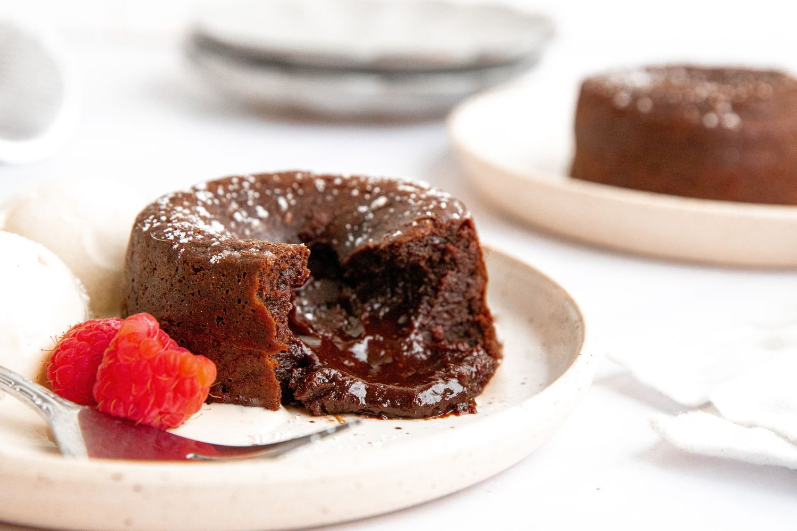
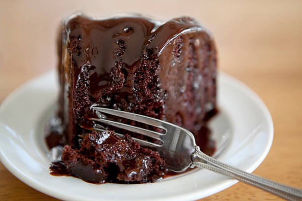
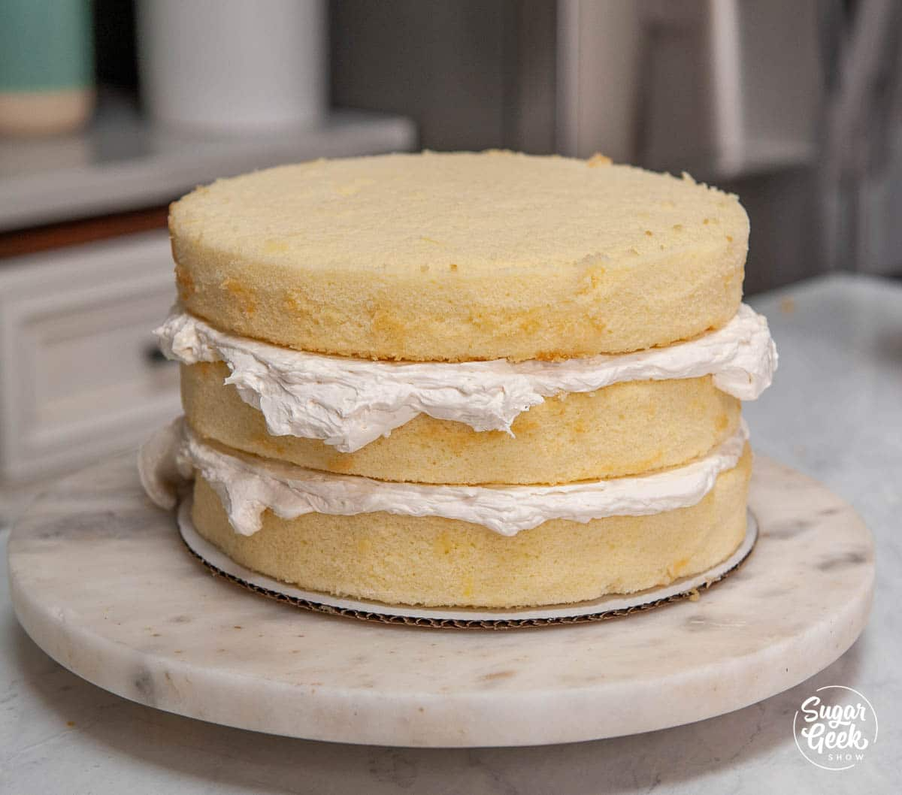
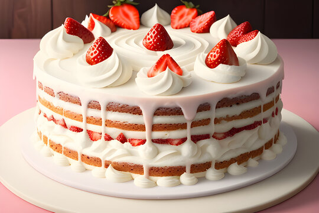

Delicious Cake Recipes by Sneha
Choco Lava Cake

Ingredients:
- 1 cup dark chocolate
- 1/2 cup butter
- 1/4 cup sugar
- 2 eggs
- 1/4 cup flour
- 1 tsp vanilla extract
Instructions:
- Preheat the oven to 220°C.
- Melt the chocolate and butter together.
- Whisk in the sugar and eggs.
- Fold in the flour and vanilla extract.
- Pour the batter into greased ramekins.
- Bake for 12-14 minutes until the edges are firm but the center is still soft.
- Let cool for a minute before serving.
Vanilla Cake

Ingredients:
- 1 1/2 cups flour
- 1 1/2 tsp baking powder
- 1/2 tsp salt
- 1/2 cup butter
- 1 cup sugar
- 2 eggs
- 1 tsp vanilla extract
- 1/2 cup milk
Instructions:
- Preheat the oven to 175°C.
- Mix the flour, baking powder, and salt.
- Cream the butter and sugar.
- Add the eggs one at a time, then the vanilla extract.
- Alternately add the flour mixture and milk, beginning and ending with the flour.
- Pour the batter into a greased and floured cake pan.
- Bake for 25-30 minutes until a toothpick comes out clean.
- Let cool before serving.
Chocolate Cake

Ingredients:
- 1 3/4 cups flour
- 3/4 cup cocoa powder
- 1 1/2 tsp baking powder
- 1 1/2 tsp baking soda
- 1 tsp salt
- 2 cups sugar
- 2 eggs
- 1 cup milk
- 1/2 cup vegetable oil
- 2 tsp vanilla extract
- 1 cup boiling water
Instructions:
- Preheat the oven to 175°C.
- Mix the flour, cocoa powder, baking powder, baking soda, and salt.
- Add the sugar, eggs, milk, oil, and vanilla extract.
- Mix until smooth, then stir in the boiling water (the batter will be thin).
- Pour the batter into greased and floured cake pans.
- Bake for 30-35 minutes until a toothpick comes out clean.
- Let cool before serving.
Strawberry Cake

Ingredients:
- 1 1/2 cups flour
- 1 tsp baking powder
- 1/2 tsp baking soda
- 1/2 tsp salt
- 1/2 cup butter
- 1 cup sugar
- 2 eggs
- 1 tsp vanilla extract
- 1/2 cup milk
- 1 cup pureed strawberries
Instructions:
- Preheat the oven to 175°C.
- Mix the flour, baking powder, baking soda, and salt.
- Cream the butter and sugar.
- Add the eggs one at a time, then the vanilla extract.
- Alternately add the flour mixture and milk, beginning and ending with the flour.
- Fold in the pureed strawberries.
- Pour the batter into a greased and floured cake pan.
- Bake for 25-30 minutes until a toothpick comes out clean.
- Let cool before serving.